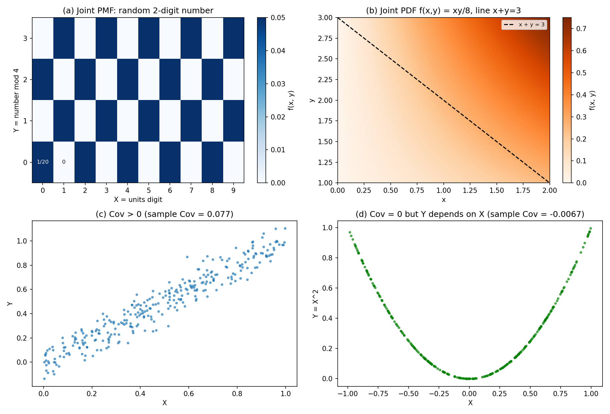

17. Joint distributions: two random variables
Chapters 15–16 built the full toolkit for one random variable: PMF/PDF, CDF, expectation, variance, and the named distributions. Real experiments rarely carry just one quantity of interest, though: toss a coin and you may care about the outcome of each toss; pick a two-digit number and you may care about its units digit and its remainder mod \(4\). Chapter 17 puts two random variables together — the joint PMF/PDF, marginals, conditionals, independence, the joint CDF, \(E[g(X, Y)]\), covariance, correlation, and \(\mathrm{Var}(X + Y)\). This is also the object that §§15.8 and 16.5 leaned on: the proof of linearity of expectation for sums was deferred until the joint distribution existed. It exists now.
17.1 Two random variables, one experiment
Def. \(X\) and \(Y\) are jointly distributed (or “defined on the same probability space”) = \(X\) and \(Y\) are both functions of the outcome of the same experiment (§15.1).
The Stats 2 deck’s three motivating examples:
- Toss a coin thrice. \(X_i = 1\) if the \(i\)-th toss is heads, \(0\) if tails, \(i = 1, 2, 3\). Three random variables on one experiment; together \(X_1, X_2, X_3\) completely describe the outcome.
- A random 2-digit number, 00–99. \(X\) = units digit, \(Y\) = remainder on division by \(4\). Two random variables on one experiment. Here knowing \(X\) tells you something about \(Y\) (a number ending in \(1\) cannot be a multiple of \(4\)).
- An IPL powerplay over. \(X\) = runs scored, \(Y\) = wickets fallen. A model that ignores the \(X\)–\(Y\) relationship is a bad model: expect larger \(X\) when \(Y = 0\) than when \(Y = 2\).
So the new question is not “what does \(X\) do?” or “what does \(Y\) do?” but “what do \(X\) and \(Y\) do together?” — and in particular, how one changes what you know about the other.
Note. Everything here is stated for two variables. The same ideas extend to \(n\) (the deck’s §1.5), but this chapter stays at two; Chapter 19’s multivariate normal is the first place this book needs more.
Basically, … One random variable = one question about an experiment. Two random variables = two questions about the same experiment. The interesting part is the relationship between the two answers: sometimes they have nothing to do with each other (separate coin tosses), sometimes one pins down the other (units digit vs. remainder mod \(4\)).
17.2 The joint PMF
Def. Let \(X, Y\) be discrete random variables on the same probability space, with ranges \(T_X, T_Y\). Their joint PMF is the function \(f_{X,Y}: T_X \times T_Y \to [0, 1]\), \[\boxed{f_{X,Y}(x, y) = P(X = x \text{ and } Y = y) = P(X = x, Y = y)}, \qquad x \in T_X,\ y \in T_Y.\]
Two properties, straight from the probability axioms (§14.6):
- Every value satisfies \(0 \le f_{X,Y}(x, y) \le 1\) — it is a probability.
- All the values sum to \(1\): \(\sum_{x \in T_X}\sum_{y \in T_Y} f_{X,Y}(x, y) = 1\) — the \((x, y)\) pairs partition the sample space (§14.5).
The joint PMF is usually written as a table (or matrix): \(X\)-values along one axis, \(Y\)-values along the other, \(P(X = x, Y = y)\) in cell \((x, y)\).
eg 1 (two coin tosses — the deck’s example). Toss a fair coin twice; \(X_i = 1\) if toss \(i\) is heads, \(0\) if tails. The four outcomes are equally likely: \[f_{X_1,X_2}(0,0) = P(X_1 = 0, X_2 = 0) = \tfrac{1}{2}\cdot\tfrac{1}{2} = \tfrac{1}{4},\] and the same for the other three cells. The joint PMF table:
| \(X_1 \setminus X_2\) | \(0\) | \(1\) |
|---|---|---|
| \(0\) | \(1/4\) | \(1/4\) |
| \(1\) | \(1/4\) | \(1/4\) |
eg 2 (random 2-digit number — the deck’s example). A number from \(00\) to \(99\) is equally likely. \(X\) = units digit (\(0\)–\(9\)), \(Y\) = number mod \(4\) (\(0\)–\(3\)):
- \(f_{X,Y}(0, 0)\): units digit \(0\) and divisible by \(4\) — the numbers \(00, 20, 40, 60, 80\). That’s \(5\) of \(100\): \(\boxed{1/20}\).
- \(f_{X,Y}(1, 0)\): units digit \(1\) and divisible by \(4\) — impossible (odd numbers are never \(0 \bmod 4\)): \(\boxed{0}\).
- \(f_{X,Y}(4, 2)\): units digit \(4\) and \(\equiv 2 \bmod 4\) — the numbers \(14, 34, 54, 74, 94\): \(\boxed{1/20}\).
Every cell is \(0\) or \(1/20\) — a checkerboard with holes where the \(X\)–\(Y\) combination is impossible (panel (a) of the figure). The \(100\) cells sum to \(1\) ✓.
Basically, … The joint PMF is the PMF of the pair: one probability for every \((x, y)\) combination. The table form is the working tool — row for one variable, column for the other, joint probability in each cell, everything summing to \(1\).
17.3 Marginal PMFs: summing out
Def. Given the joint PMF \(f_{X,Y}\), the PMFs of the individual variables \(X\) and \(Y\) are called the marginal PMFs. To get them, sum out the other variable: \[\boxed{f_X(x) = \sum_{y \in T_Y} f_{X,Y}(x, y), \qquad f_Y(y) = \sum_{x \in T_X} f_{X,Y}(x, y).}\]
Why it works (the deck’s proof): fix \(x\); the events \(\{X = x, Y = y\}\) as \(y\) ranges over \(T_Y\) are disjoint and their union is \(\{X = x\}\) — a partition (§14.5). So by the law of total probability (§14.10), \[P(X = x) = \sum_{y \in T_Y} P(X = x, Y = y).\] This step is called marginalization. In the table: \(f_X\) is the row totals, \(f_Y\) the column totals.
- Joint → marginal is unique. One joint table gives exactly one pair of marginals.
- Marginal ↛ joint. The reverse is not unique: many different joint tables can produce the same marginals. You cannot reconstruct the relationship between \(X\) and \(Y\) from their individual distributions alone.
eg 3 (marginals from the table — the deck’s example). The joint PMF
| \(X_1 \setminus X_2\) | \(0\) | \(1\) |
|---|---|---|
| \(0\) | \(0.05\) | \(0.35\) |
| \(1\) | \(0.25\) | \(0.35\) |
is valid: all entries \(\ge 0\), sum \(= 1.00\) ✓. Summing out: \[f_{X_1}(0) = 0.05 + 0.25 = \boxed{0.30}, \qquad f_{X_1}(1) = 0.35 + 0.35 = \boxed{0.70},\] \[f_{X_2}(0) = 0.05 + 0.35 = \boxed{0.40}, \qquad f_{X_2}(1) = 0.25 + 0.35 = \boxed{0.60}.\]
eg 4 (same marginals, different joints — the deck’s example). For any \(x \in [0, 1/2]\) the table
| \(X_1 \setminus X_2\) | \(0\) | \(1\) |
|---|---|---|
| \(0\) | \(x\) | \(1/2 - x\) |
| \(1\) | \(1/2 - x\) | \(x\) |
has marginals \(f_{X_1}(0) = f_{X_1}(1) = f_{X_2}(0) = f_{X_2}(1) = 1/2\) — regardless of \(x\). Infinitely many different joints, identical marginals. (The deck’s warning made concrete: seeing the marginals and writing down \(f_{X,Y}(x,y) = f_X(x)\,f_Y(y)\) is only one of these possibilities — the \(x = 1/4\) one — and it may be wrong. §17.5 names when it is right.)
Basically, … Marginal = “the \(X\) story alone”, obtained by adding up each row (or column) of the joint table and forgetting the other variable. But the marginals don’t remember how the two variables interact — that information lives only in the full joint table.
17.4 Conditional PMFs and the multiplication rule
Def. The conditional PMF of \(Y\) given \(X = x\) is \[\boxed{f_{Y \mid X = x}(y) = P(Y = y \mid X = x) = \frac{f_{X,Y}(x, y)}{f_X(x)}}, \qquad f_X(x) > 0.\] It is exactly the conditional probability of §14.9, with the joint PMF in the numerator.
- For fixed \(x\), \(f_{Y \mid X = x}\) is a genuine PMF: \(\sum_y f_{Y \mid X = x}(y) = \sum_y f_{X,Y}(x,y)/f_X(x) = f_X(x)/f_X(x) = 1\).
- Conditioning can change the range. \((Y \mid X = x)\) only takes values \(y\) with \(f_{X,Y}(x, y) > 0\) — knowing \(X\) can rule out \(Y\)-values entirely (as eg 2’s zeros showed).
- Rearranging the definition gives the multiplication rule: \[\boxed{f_{X,Y}(x, y) = f_X(x)\; f_{Y \mid X = x}(y)},\] the joint built from a marginal and a conditional — the workhorse for constructing joint PMFs when the experiment has a natural order.
eg 5 (conditionals from the table — the deck’s example). Joint PMF on \(X \in \{0, 1, 2\}\), \(Y \in \{0, 1\}\):
| \(X \setminus Y\) | \(0\) | \(1\) |
|---|---|---|
| \(0\) | \(1/4\) | \(1/8\) |
| \(1\) | \(1/8\) | \(1/8\) |
| \(2\) | \(1/8\) | \(1/4\) |
Marginals: \(f_X(0) = 3/8\), \(f_X(1) = 1/4\), \(f_X(2) = 3/8\); \(f_Y(0) = f_Y(1) = 1/2\). \[f_{Y \mid X = 0}(0) = \frac{1/4}{3/8} = \boxed{\tfrac{2}{3}}, \qquad f_{Y \mid X = 0}(1) = \frac{1/8}{3/8} = \boxed{\tfrac{1}{3}} \quad \text{(sums to } 1 \text{ ✓)},\] \[f_{X \mid Y = 1}(0) = \frac{1/8}{1/2} = \boxed{\tfrac{1}{4}}.\]
eg 6 (die, then coins — the deck’s example). Throw a die; let \(X\) be the number shown. Toss a coin that many times; let \(Y\) be the number of heads. Then \[f_X(t) = \tfrac{1}{6}\ (t = 1,\dots,6), \qquad (Y \mid X = t) \sim \mathrm{Binomial}(t, \tfrac{1}{2}) \quad \text{(§15.12)},\] so \(f_{Y \mid X = t}(t') = \binom{t}{t'}(1/2)^t\) for \(t' = 0, \dots, t\). By the multiplication rule: \[\boxed{f_{X,Y}(t, t') = \tfrac{1}{6}\binom{t}{t'}\left(\tfrac{1}{2}\right)^t}, \qquad t = 1,\dots,6,\ t' = 0,\dots,t.\] The conditional was easy to write down; the joint follows for free. This is the standard modeling pattern: specify what happens first, then what happens given it.
Basically, … Conditional PMF = “zoom in on one column (or row) of the joint table and re-normalize it to sum to \(1\)”. The multiplication rule reads the same table backwards: joint = marginal \(\times\) conditional. If your experiment has an order (die first, coins after), build the joint from the conditional — don’t try to write the joint directly.
17.5 Independence of random variables
Def. \(X\) and \(Y\) are independent if their joint PMF factors into the product of the marginals, for every pair: \[\boxed{f_{X,Y}(x, y) = f_X(x)\, f_Y(y) \quad \text{for all } x \in T_X,\ y \in T_Y.}\]
This lifts §14.12 (independence of events) to random variables: \(X\) and \(Y\) are independent iff every event \(\{X = x\}\) is independent of every event \(\{Y = y\}\).
- To prove independence: check the factorization at all \((x, y)\).
- To disprove independence: one counterexample suffices: \(f_{X,Y}(x, y) \ne f_X(x)\,f_Y(y)\) for a single pair.
- The zero-cell shortcut (the deck’s special case): if \(f_{X,Y}(x, y) = 0\) while \(f_X(x) > 0\) and \(f_Y(y) > 0\), then \(X\) and \(Y\) are dependent — independence would require \(f_{X,Y}(x,y) = f_X(x)f_Y(y) > 0\). Impossible combinations are the fastest dependence detector.
eg 7 (independence tests — the deck’s examples).
- Two coin tosses (eg 1): \(f_{X_1,X_2}(0,0) = 1/4 = (1/2)(1/2) = f_{X_1}(0)f_{X_2}(0)\), and the same at all four cells. Independent ✓.
- The 2-digit number (eg 2): \(f_{X,Y}(1, 0) = 0 \ne (1/10)(1/4) = 1/40 = f_X(1)f_Y(0)\). Not independent — one counterexample is enough (and it’s the zero-cell case).
- The \(x\)-family (eg 4): \(f_{X_1,X_2}(0,0) = x\) vs. \(f_{X_1}(0)f_{X_2}(0) = 1/4\). Independent iff \(\boxed{x = 1/4}\); dependent for every other \(x \in [0, 1/2]\).
Basically, … Independent = “the table is the product of its margins” — knowing \(X\) changes nothing about \(Y\)’s distribution, so \(f_{Y \mid X = x}(y) = f_Y(y)\) for every \(x\). To break independence you only need a single cell where the product rule fails; a \(0\) in a cell whose row and column both have positive mass is the classic giveaway.
17.6 The joint CDF
Def. The joint CDF of \(X\) and \(Y\) is \[\boxed{F_{X,Y}(x, y) = P(X \le x,\ Y \le y) = \sum_{u \le x}\sum_{v \le y} f_{X,Y}(u, v)}, \qquad x, y \in \mathbb{R}.\]
Same definition as §15.5, in two dimensions: probability of the rectangle \((-\infty, x] \times (-\infty, y]\).
- Limits: \(F_{X,Y} \to 0\) when \(x \to -\infty\) or \(y \to -\infty\); \(F_{X,Y} \to 1\) when both \(x, y \to +\infty\).
- Non-decreasing in each argument separately.
- Rectangle formula. For \(a < b\), \(c < d\): \[\boxed{P(a < X \le b,\ c < Y \le d) = F_{X,Y}(b, d) - F_{X,Y}(a, d) - F_{X,Y}(b, c) + F_{X,Y}(a, c)}\] (add the whole rectangle, subtract the two strips, add back the doubly-subtracted corner — inclusion–exclusion, §14.7).
- The marginal CDFs fall out: \(F_X(x) = \lim_{y \to +\infty} F_{X,Y}(x, y)\) — push one bound to infinity and the other variable is summed out.
eg 8 (joint CDF of two coin tosses). With eg 1’s table (\(1/4\) in each cell): \[F_{X_1,X_2}(0, 0) = \tfrac{1}{4}, \quad F_{X_1,X_2}(0, 1) = \tfrac{1}{2}, \quad F_{X_1,X_2}(1, 0) = \tfrac{1}{2}, \quad F_{X_1,X_2}(1, 1) = 1.\] Check the rectangle formula on \((0, 1] \times (0, 1]\): \[P(X_1 = 1, X_2 = 1) = F(1,1) - F(0,1) - F(1,0) + F(0,0) = 1 - \tfrac{1}{2} - \tfrac{1}{2} + \tfrac{1}{4} = \boxed{\tfrac{1}{4}} \text{ ✓}.\]
Basically, … The joint CDF is the running total in two dimensions — “how much probability has piled up in the rectangle below-left of \((x, y)\)”. Differences of CDF values give rectangle probabilities, exactly as \(F_X(b) - F_X(a)\) gives interval probabilities (§15.5).
17.7 Expectation of functions of two random variables
Def (two-variable LOTUS). For \(Z = g(X, Y)\), \[\boxed{E[g(X, Y)] = \sum_{x \in T_X}\sum_{y \in T_Y} g(x, y)\, f_{X,Y}(x, y)}\] — average the transformed values with the joint PMF, no need to find \(Z\)’s distribution first. (The continuous version swaps the sums for a double integral; §17.12.)
The headline application is the sum — and with the joint PMF in hand, linearity finally gets its proof:
Theorem (linearity for sums — the deferred proof from §§15.8, 16.5). \[\boxed{E[X + Y] = E[X] + E[Y]},\] no independence needed. Proof: \[\begin{aligned} E[X + Y] &= \sum_x\sum_y (x + y)\, f_{X,Y}(x, y) \\ &= \sum_x x\underbrace{\sum_y f_{X,Y}(x, y)}_{f_X(x)} + \sum_y y\underbrace{\sum_x f_{X,Y}(x, y)}_{f_Y(y)} \quad \text{(marginalization, §17.3)} \\ &= E[X] + E[Y]. \ \blacksquare \end{aligned}\] The joint PMF was the missing piece all along: the double sum splits because marginalization collapses each inner sum.
Note (total expectation, two-variable form). Conditioning the other way: \(E[Y] = \sum_x E[Y \mid X = x]\, f_X(x)\) — the law of total probability (§14.10) with expectations. This is how eg 6-style “two-stage” experiments are averaged.
eg 9 (\(E[XY]\) on the table). On eg 5’s table: \[E[XY] = \sum_x\sum_y xy\,f_{X,Y}(x,y) = 1\cdot 1\cdot\tfrac{1}{8} + 2\cdot 1\cdot\tfrac{1}{4} = \boxed{\tfrac{5}{8}},\] the other terms being \(0\). (Watch for this number — §17.9 uses it.)
eg 10 (die, then coins — total expectation). With eg 6’s setup, \((Y \mid X = t) \sim \mathrm{Binomial}(t, 1/2)\) has mean \(t/2\) (§15.12), and \(E[X] = 7/2\): \[E[Y] = \sum_{t=1}^{6} E[Y \mid X = t]\, f_X(t) = \sum_{t=1}^{6} \frac{t}{2}\cdot\frac{1}{6} = \frac{E[X]}{2} = \boxed{\frac{7}{4}}.\] No joint table was ever written — the conditional did all the work.
Basically, … Two-variable LOTUS: to average any function of the pair, weight each cell’s \(g(x, y)\) by the cell’s probability and add up. And linearity \(E[X+Y] = E[X] + E[Y]\) is not a separate axiom — it falls out of the double sum the moment the joint PMF exists. Always true, independence irrelevant.
17.8 The distribution of \(g(X, Y)\): pooling over contours
LOTUS (§17.7) gives expectations without the distribution of \(Z = g(X, Y)\). When the distribution itself is needed, pool the joint PMF over the contours \(\{g(x, y) = z\}\) (the deck’s §2.3.3): \[\boxed{P(Z = z) = \sum_{(x,y):\, g(x,y) = z} f_{X,Y}(x, y)}\] — add up every cell of the joint table that the function maps to \(z\). (One-variable version: §15.6.)
eg 11 (sum of two uniforms — the deck’s example). \(X, Y \stackrel{\text{i.i.d.}}{\sim} \mathrm{Uniform}\{0, 1, 2, 3\}\), \(Z = X + Y\). The joint cells are all \(1/16\) (independence, §17.5). Counting the \((x, y)\) with \(x + y = z\):
| \(z\) | \(0\) | \(1\) | \(2\) | \(3\) | \(4\) | \(5\) | \(6\) |
|---|---|---|---|---|---|---|---|
| \(f_Z(z)\) | \(1/16\) | \(2/16\) | \(3/16\) | \(4/16\) | \(3/16\) | \(2/16\) | \(1/16\) |
Note: the sum of two uniforms is not uniform — it peaks in the middle (the deck’s “Try it yourself” warning). Pooling over the anti-diagonal contours makes the triangular shape obvious: more \((x, y)\) pairs land on middle sums.
Basically, … The distribution of \(g(X, Y)\) = walk the joint table, and for each value \(z\), collect all cells where \(g\) equals \(z\). Sums, maxima, minima all work this way; the contours tell you which cells to pool. (The continuous version — convolution integrals and max/min via CDFs — is Chapter 18.)
17.9 Covariance
Def. The covariance of \(X\) and \(Y\) is \[\boxed{\mathrm{Cov}(X, Y) = E\big[(X - E[X])(Y - E[Y])\big]},\] the average product of the deviations from the means. Expanding (linearity, §17.7): \[\boxed{\mathrm{Cov}(X, Y) = E[XY] - E[X]\,E[Y]}.\]
- Sign: \(\mathrm{Cov} > 0\) means \(X\) and \(Y\) tend to be above (or below) their means together; \(\mathrm{Cov} < 0\) means one is above when the other is below; \(\mathrm{Cov} = 0\) means no linear co-movement — \(X\) and \(Y\) are uncorrelated.
- \(\mathrm{Cov}(X, X) = \mathrm{Var}(X)\) — variance is self-covariance (§15.9).
- Symmetric: \(\mathrm{Cov}(X, Y) = \mathrm{Cov}(Y, X)\).
- \(\mathrm{Cov}(aX + b,\ cY + d) = ac\,\mathrm{Cov}(X, Y)\) — shifts don’t matter, scales multiply.
Theorem (independence ⇒ uncorrelated). If \(X, Y\) are independent, \(\mathrm{Cov}(X, Y) = 0\). Proof: \(E[XY] = \sum_x\sum_y xy\,f_X(x)f_Y(y) = \big(\sum_x x f_X(x)\big)\big(\sum_y y f_Y(y)\big) = E[X]E[Y]\). ∎
Warning — the converse is false. Zero covariance does not imply independence. Covariance only sees linear co-movement; a perfect nonlinear relationship can have \(\mathrm{Cov} = 0\).
eg 12 (covariance on the table). On eg 5’s table: \(E[X] = 1\), \(E[Y] = 1/2\) (check: \(0\cdot\tfrac{3}{8} + 1\cdot\tfrac{1}{4} + 2\cdot\tfrac{3}{8} = 1\)), and \(E[XY] = 5/8\) (eg 9): \[\mathrm{Cov}(X, Y) = \tfrac{5}{8} - 1\cdot\tfrac{1}{2} = \boxed{\tfrac{1}{8}} > 0\] — positive: larger \(X\) comes with larger \(Y\) (look at the table: the mass sits on \((0,0)\) and \((2,1)\)).
eg 13 (uncorrelated but dependent — a hand-checked counterexample). Let \(X \in \{-1, 0, 1\}\) with probability \(1/3\) each, and \(Y = X^2\). Then \(E[X] = 0\), \(E[Y] = (1 + 0 + 1)/3 = 2/3\), and \[E[XY] = E[X^3] = \frac{(-1)^3 + 0^3 + 1^3}{3} = 0,\] so \(\mathrm{Cov}(X, Y) = 0 - 0\cdot\tfrac{2}{3} = \boxed{0}\) — uncorrelated. But \(Y\) is determined by \(X\): e.g. \(f_{X,Y}(0, 1) = 0 \ne (1/3)(2/3) = f_X(0)f_Y(1)\) (zero-cell test, §17.5). Dependence with exactly zero covariance — panel (d) of the figure.
Basically, … Covariance = “do the two variables move together?” measured as the average product of their deviations. Independent variables always have covariance \(0\) — but \(0\) covariance doesn’t mean independent: it only rules out linear relationships. A \(U\)-shaped relationship (like \(Y = X^2\)) slips through with covariance exactly \(0\).
17.10 The correlation coefficient
Def. The correlation coefficient (Pearson) of \(X\) and \(Y\) is \[\boxed{\rho(X, Y) = \frac{\mathrm{Cov}(X, Y)}{\sigma_X\, \sigma_Y}}, \qquad \sigma_X, \sigma_Y > 0.\]
Covariance has awkward units (units of \(X \times\) units of \(Y\)); dividing by the standard deviations (§15.9) makes \(\rho\) unitless and comparable across problems.
Theorem. \(\boxed{-1 \le \rho(X, Y) \le 1}\). Proof: standardize \(U = (X - E[X])/\sigma_X\), \(V = (Y - E[Y])/\sigma_Y\), so \(\mathrm{Var}(U) = \mathrm{Var}(V) = 1\) and \(\mathrm{Cov}(U, V) = \rho\). Then \(0 \le \mathrm{Var}(U + V) = 2 + 2\rho\) gives \(\rho \ge -1\), and \(0 \le \mathrm{Var}(U - V) = 2 - 2\rho\) gives \(\rho \le 1\). ∎
- \(|\rho| = 1\) iff \(Y\) is an exact affine function of \(X\) (\(Y = aX + b\)): \(+1\) for \(a > 0\), \(-1\) for \(a < 0\).
- \(\rho = 0\) = uncorrelated — same warning as §17.9: linear silence, not independence.
eg 14. On eg 5’s table: \(\mathrm{Cov}(X, Y) = 1/8\) (eg 12). \(E[X^2] = 0 + 1\cdot\tfrac{1}{4} + 4\cdot\tfrac{3}{8} = 7/4\), so \(\mathrm{Var}(X) = 7/4 - 1 = 3/4\); \(\mathrm{Var}(Y) = 1/2 - 1/4 = 1/4\) (Bernoulli-ish, §15.11). Hence \[\rho(X, Y) = \frac{1/8}{\sqrt{3/4}\,\sqrt{1/4}} = \frac{1/8}{\sqrt{3}/4} = \boxed{\frac{1}{2\sqrt{3}} \approx 0.29},\] a mild positive linear relationship — consistent with the table’s diagonal lean.
Basically, … Correlation = covariance rescaled to live in \([-1, 1]\): \(+1\) = perfect lockstep, \(-1\) = perfect mirror, \(0\) = no linear relationship. It inherits covariance’s blind spot for nonlinear patterns, so never read it as “dependence strength” in general.
17.11 Variance of a sum
Theorem. For any two random variables, \[\boxed{\mathrm{Var}(X + Y) = \mathrm{Var}(X) + \mathrm{Var}(Y) + 2\,\mathrm{Cov}(X, Y)}.\] Proof: write \(\mu_X = E[X]\), \(\mu_Y = E[Y]\) and expand: \[\mathrm{Var}(X + Y) = E\big[((X - \mu_X) + (Y - \mu_Y))^2\big] = E[(X-\mu_X)^2] + E[(Y-\mu_Y)^2] + 2E[(X-\mu_X)(Y-\mu_Y)].\] ∎
Corollary (the deferred case from §16.6). If \(X\) and \(Y\) are independent, \(\mathrm{Cov}(X, Y) = 0\) (§17.9), so \[\boxed{\mathrm{Var}(X + Y) = \mathrm{Var}(X) + \mathrm{Var}(Y)} \qquad \text{(independent } X, Y\text{)}.\] Variances add for independent variables — the fact §16.6 promised.
- Positively correlated variables: the sum is more variable than the parts (\(\mathrm{Var}(X+Y) > \mathrm{Var}(X) + \mathrm{Var}(Y)\)); negatively correlated: less.
- The general affine form: \(\mathrm{Var}(aX + bY) = a^2\mathrm{Var}(X) + b^2\mathrm{Var}(Y) + 2ab\,\mathrm{Cov}(X, Y)\) — note \(\mathrm{Var}(X - Y) = \mathrm{Var}(X) + \mathrm{Var}(Y) - 2\,\mathrm{Cov}(X, Y)\).
- Sanity check on §16.6’s counterexample: \(Y = -X\) gives \(\mathrm{Cov}(X, Y) = -\mathrm{Var}(X)\), so \(\mathrm{Var}(X + Y) = \mathrm{Var}(X) + \mathrm{Var}(X) - 2\mathrm{Var}(X) = 0\) ✓ — exactly what §16.6 computed directly.
eg 15 (variances add — checked two ways). \(X_1, X_2\) = two fair-coin indicators (§17.2, eg 1): each \(\mathrm{Var} = 1/4\) (§15.11). Independence gives \(\mathrm{Var}(X_1 + X_2) = 1/4 + 1/4 = \boxed{1/2}\). Direct check: \(Z = X_1 + X_2\) takes \(0, 1, 2\) with probabilities \(1/4, 1/2, 1/4\); \(E[Z] = 1\), \(E[Z^2] = 0 + 1/2 + 1 = 3/2\), so \(\mathrm{Var}(Z) = 3/2 - 1 = 1/2\) ✓.
Basically, … Variance of a sum = sum of variances plus twice the covariance. The covariance term is the correction for the two variables moving together. For independent variables there’s no co-movement to correct for, and variances simply add — the cleanest case, and the one §16.6 was waiting for.
17.12 The joint PDF
Def. For two continuous random variables \(X, Y\) (MLF Week 11, Part 4), the joint PDF is the function \(f_{X,Y}\) such that for any region \(A \subseteq \mathbb{R}^2\), \[\boxed{P\big((X, Y) \in A\big) = \iint_A f_{X,Y}(x, y)\, dx\, dy}.\]
- \(f_{X,Y}(x, y) \ge 0\) everywhere — it is probability divided by a positive area \(dx\,dy\).
- \(\iint_{\mathbb{R}^2} f_{X,Y} = 1\) — the discrete “table sums to \(1\)” (§17.2) with sums replaced by integrals, as in §16.3.
- \(f_{X,Y}\) is a density (probability per unit area), not a probability — it can exceed \(1\), exactly as in §16.3.
eg 16 (the MLF Week 11 tutorial’s problem). \[f_{X,Y}(x, y) = \begin{cases} c\,xy & 0 < x < 2,\ 1 < y < 3, \\ 0 & \text{otherwise}. \end{cases}\] Find \(c\): integrate to \(1\) over the rectangle. \[1 = \int_0^2\!\!\int_1^3 cxy\, dy\, dx = c\left[\frac{x^2}{2}\right]_0^2 \left[\frac{y^2}{2}\right]_1^3 = c\cdot 2\cdot\frac{9 - 1}{2} = 8c,\] so \(\boxed{c = 1/8}\). (The rectangle factors into separate \(x\) and \(y\) integrals — a hint of independence, confirmed in §17.13.)
eg 17 (rectangle probability — the tutorial’s question). \[P(0 < X < 1,\ 1 < Y < 2) = \int_0^1\!\!\int_1^2 \frac{xy}{8}\, dy\, dx = \frac{1}{8}\cdot\frac{1}{2}\cdot\frac{4 - 1}{2} = \boxed{\frac{3}{32}}.\]
eg 18 (a non-rectangular region — the tutorial’s question). \(P(X + Y < 3)\): the region is \(0 < x < 2\), \(1 < y < \min(3, 3 - x) = 3 - x\) (panel (b) of the figure): \[\begin{aligned} P(X + Y < 3) &= \int_0^2\!\!\int_1^{\,3-x} \frac{xy}{8}\, dy\, dx = \frac{1}{8}\int_0^2 x\left[\frac{(3-x)^2 - 1}{2}\right]dx \\ &= \frac{1}{16}\int_0^2 \big(x^3 - 6x^2 + 8x\big)\, dx = \frac{1}{16}\left[\frac{x^4}{4} - 2x^3 + 4x^2\right]_0^2 \\ &= \frac{1}{16}(4 - 16 + 16) = \boxed{\frac{1}{4}}. \end{aligned}\]
Basically, … The joint PDF is the continuous joint table: probability is volume under the joint density surface over a region. Rectangles are easy (separate the integrals); slanted regions need the limits written carefully — draw the region first, then integrate.
17.13 Marginal PDFs: integrating out
Def. The marginal PDFs come from integrating out the other variable (MLF Week 11, Part 4): \[\boxed{f_X(x) = \int_{-\infty}^{\infty} f_{X,Y}(x, y)\, dy, \qquad f_Y(y) = \int_{-\infty}^{\infty} f_{X,Y}(x, y)\, dx}.\]
Same idea as §17.3 — “row totals and column totals” — with sums replaced by integrals (§16.3’s lift). Marginal CDFs follow: \(F_X(x) = \int_{-\infty}^{x} f_X(u)\, du\) (§16.4).
eg 19 (marginals of the tutorial density). For \(f_{X,Y}(x, y) = xy/8\) on \((0,2)\times(1,3)\): \[f_X(x) = \int_1^3 \frac{xy}{8}\, dy = \frac{x}{8}\left[\frac{y^2}{2}\right]_1^3 = \boxed{\frac{x}{2}}, \qquad 0 < x < 2,\] \[f_Y(y) = \int_0^2 \frac{xy}{8}\, dx = \frac{y}{8}\left[\frac{x^2}{2}\right]_0^2 = \boxed{\frac{y}{4}}, \qquad 1 < y < 3.\] Check they are valid densities: \(\int_0^2 (x/2)\,dx = 1\) ✓, \(\int_1^3 (y/4)\,dy = (9-1)/8 = 1\) ✓. Then \[F_X(1) = \int_0^1 \frac{x}{2}\,dx = \boxed{\tfrac{1}{4}}, \qquad F_Y(2) = \int_1^2 \frac{y}{4}\,dy = \boxed{\tfrac{3}{8}}\] — the tutorial’s answers, confirmed.
Note (independence in the continuous case). Here \(f_{X,Y}(x, y) = xy/8 = (x/2)(y/4) = f_X(x)\,f_Y(y)\) for every \((x, y)\), on a rectangular region — so \(X\) and \(Y\) are independent (§17.5’s rule, with integrals). Two ingredients, both needed: the density factors and the support is a product set. A factorizing density on a non-rectangular support is not independent.
Basically, … Integrating out = the continuous version of summing out. Slice the joint density along one axis, add up the slice, and you get the other variable’s density alone. And the independence test is unchanged: does the joint equal the product of the marginals — with a rectangular support?
17.14 Conditional PDFs
Def. The conditional PDF of \(Y\) given \(X = x\) is (MLF Week 11, Part 2/4) \[\boxed{f_{Y \mid X = x}(y) = \frac{f_{X,Y}(x, y)}{f_X(x)}}, \qquad f_X(x) > 0,\] and the multiplication rule holds as in §17.4: \[\boxed{f_{X,Y}(x, y) = f_X(x)\; f_{Y \mid X = x}(y)}.\]
For fixed \(x\), \(f_{Y \mid X = x}\) is a genuine density (\(\int f_{Y \mid X = x} = 1\) — the joint integrates to \(f_X(x)\)). If \(X, Y\) are independent, \(f_{Y \mid X = x}(y) = f_Y(y)\): conditioning changes nothing.
eg 20 (conditional on a triangular region — hand-checked). Let \(X \sim \mathrm{Uniform}[0, 1]\) and, given \(X = x\), let \((Y \mid X = x) \sim \mathrm{Uniform}[0, x]\): \[f_{X,Y}(x, y) = f_X(x)\,f_{Y \mid X = x}(y) = 1\cdot\frac{1}{x} = \frac{1}{x}, \qquad 0 \le y \le x \le 1.\] Validity: \(\int_0^1\!\!\int_0^x (1/x)\,dy\,dx = \int_0^1 1\,dx = 1\) ✓. The marginal of \(Y\): \[f_Y(y) = \int_y^1 \frac{1}{x}\,dx = \boxed{-\ln y}, \qquad 0 < y < 1 \quad \left(\int_0^1 -\ln y\,dy = 1 \text{ ✓}\right).\] And the reverse conditional, on \(y \le x \le 1\): \[f_{X \mid Y = y}(x) = \frac{1/x}{-\ln y} = \boxed{\frac{1}{-x\,\ln y}}; \qquad \int_y^1 \frac{dx}{-x\ln y} = \frac{[\ln x]_y^1}{-\ln y} = 1 \text{ ✓}.\] Knowing \(Y = y\) rules out \(X < y\) — conditioning reshapes the range, exactly as in §17.4 — and the density is not uniform on \([y, 1]\): smaller \(x\) (tighter \(Y\)-intervals) get more weight.
Basically, … Conditional PDF = slice the joint density at \(X = x\) and re-normalize the slice to area \(1\). Same table-column idea as §17.4, now with integrals. And the multiplication rule is the modeling workhorse in the continuous world too: specify the marginal of the first variable, then the conditional of the second, and the joint follows.
17.15 Why this matters: the two-variable toolkit
- The toolkit is complete. From one joint object you get everything: marginals by summing/integrating out (§§17.3, 17.13), conditionals by dividing (§§17.4, 17.14), the joint back by multiplying (§§17.4, 17.14), independence by the factorization test (§17.5). Two slogans to keep: joint → marginal is unique; marginal ↛ joint.
- Linearity, proved. \(E[X + Y] = E[X] + E[Y]\) (§17.7) needed the joint PMF — that was the debt §§15.8 and 16.5 carried, now paid. And covariance/correlation (§§17.9–17.10) is the first measure of relationship between variables: the feature-correlation matrices and PCA of later chapters are this idea at scale.
- What comes next. Chapter 18 goes deeper on joint continuous distributions (sums via convolution, min/max via CDFs, transformed variables); Chapter 19 builds the multivariate normal, where the covariance becomes a matrix; Chapter 20 estimates these joint models from data (MLE); Chapter 21’s central limit theorem explains why sums of many variables are normal — with \(\mathrm{Var}\) adding (§17.11) all the way there.
Problem set
- (Joint PMF validity and marginals) The joint PMF of \(X_1, X_2 \in \{0, 1\}\) is: \(f(0,0) = 0.05\), \(f(0,1) = 0.35\), \(f(1,0) = 0.25\), \(f(1,1) = 0.35\). (a) Verify it is a valid joint PMF. (b) Find the marginal PMFs \(f_{X_1}\) and \(f_{X_2}\). (c) Are \(X_1\) and \(X_2\) independent?
- (The 2-digit number) \(X\) = units digit, \(Y\) = remainder mod \(4\) of a random 2-digit number (eg 2). (a) Find \(f_{X,Y}(2, 3)\). (b) Are \(X\) and \(Y\) independent? Give a one-cell justification.
- (Conditional PMFs) On eg 5’s table (\(X \in \{0,1,2\}\), \(Y \in \{0,1\}\)): (a) find \(f_{Y \mid X = 1}\) and check it sums to \(1\); (b) find \(f_{X \mid Y = 0}(2)\).
- (Joint CDF) For two fair-coin indicators \(X_1, X_2\) (eg 1): (a) write \(F_{X_1,X_2}\) at the four points \((0,0), (0,1), (1,0), (1,1)\); (b) use the rectangle formula to recover \(P(X_1 = 1, X_2 = 1)\).
- (\(E[g(X,Y)]\) and covariance) Die-then-coins (eg 6/eg 10): \(X\) = die outcome, \(Y\) = heads in \(X\) tosses. (a) Find \(E[Y]\). (b) Find \(\mathrm{Cov}(X, Y)\).
- (Covariance and correlation) On eg 5’s table: compute \(\mathrm{Cov}(X, Y)\) and \(\rho(X, Y)\).
- (Variance of sums) \(X, Y \stackrel{\text{i.i.d.}}{\sim} \mathrm{Bernoulli}(p)\). Find \(\mathrm{Var}(X + Y)\) and \(\mathrm{Var}(X - Y)\).
- (Joint PDF) \(f_{X,Y}(x, y) = cxy\) for \(0 < x < 2\), \(1 < y < 3\) (\(0\) otherwise). (a) Find \(c\). (b) Find \(P(X < 1,\ Y > 2)\).
- (Marginal and conditional PDFs) For the density in Problem 8: (a) find \(f_X\) and \(f_Y\); (b) find \(f_{Y \mid X = x}\); (c) are \(X\) and \(Y\) independent?
- (IPL powerplay) \(Y \in \{0, 1, 2\}\) = wickets in an over, with \(f_Y(0) = 13/16\), \(f_Y(1) = 1/8\), \(f_Y(2) = 1/16\). Given \(Y = y\), \(X\) = runs is uniform on \(\{6,\dots,12\}\), \(\{2,\dots,8\}\), \(\{0,\dots,6\}\) respectively. Find \(E[X]\).

Solutions
Attempt each problem first, then click a problem to reveal its worked solution.
1. (Joint PMF validity and marginals) The table:
| \(X_1 \setminus X_2\) | \(0\) | \(1\) |
|---|---|---|
| \(0\) | \(0.05\) | \(0.35\) |
| \(1\) | \(0.25\) | \(0.35\) |
Validity: every entry is in \([0, 1]\) ✓; the entries sum to \(0.05 + 0.35 + 0.25 + 0.35 = 1.00\) ✓ (§17.2). Valid joint PMF.
Summing out (§17.3): \[f_{X_1}(0) = 0.05 + 0.25 = \boxed{0.30}, \qquad f_{X_1}(1) = 0.35 + 0.35 = \boxed{0.70},\] \[f_{X_2}(0) = 0.05 + 0.35 = \boxed{0.40}, \qquad f_{X_2}(1) = 0.25 + 0.35 = \boxed{0.60}.\]
Independence test (§17.5): \(f_{X_1,X_2}(0, 0) = 0.05\) but \(f_{X_1}(0)\,f_{X_2}(0) = 0.30 \times 0.40 = 0.12\). Since \(0.05 \ne 0.12\), \(\boxed{\text{not independent}}\) — one failing cell is enough.
2. (The 2-digit number) (a) \(f_{X,Y}(2, 3)\): units digit \(2\) and number \(\equiv 3 \bmod 4\). A number ending in \(2\) is even, hence \(0\) or \(2 \bmod 4\) — never \(3\). The count is \(0\): \(\boxed{f_{X,Y}(2,3) = 0}\).
- One-cell justification (§17.5, zero-cell shortcut): \(f_{X,Y}(2, 3) = 0\) while \(f_X(2) = 1/10 > 0\) and \(f_Y(3) = 1/4 > 0\), so \(f_{X,Y}(2,3) \ne f_X(2)\,f_Y(3) = 1/40\). \(\boxed{\text{Not independent}.}\)
3. (Conditional PMFs) On eg 5’s table, \(f_X(1) = 1/4\), \(f_Y(0) = 1/2\).
\(f_{Y \mid X = 1}(0) = \dfrac{f_{X,Y}(1,0)}{f_X(1)} = \dfrac{1/8}{1/4} = \boxed{\tfrac{1}{2}}\), \(f_{Y \mid X = 1}(1) = \dfrac{1/8}{1/4} = \boxed{\tfrac{1}{2}}\). Check: \(1/2 + 1/2 = 1\) ✓ — a genuine PMF (§17.4).
\(f_{X \mid Y = 0}(2) = \dfrac{f_{X,Y}(2,0)}{f_Y(0)} = \dfrac{1/8}{1/2} = \boxed{\tfrac{1}{4}}\).
4. (Joint CDF) (a) With \(1/4\) in every cell of eg 1’s table: \[\boxed{F_{X_1,X_2}(0,0) = 1/4}, \quad \boxed{F_{X_1,X_2}(0,1) = 1/2}, \quad \boxed{F_{X_1,X_2}(1,0) = 1/2}, \quad \boxed{F_{X_1,X_2}(1,1) = 1}.\]
- Rectangle formula (§17.6) on \((0,1] \times (0,1]\): \[P(X_1 = 1, X_2 = 1) = F(1,1) - F(0,1) - F(1,0) + F(0,0) = 1 - \tfrac{1}{2} - \tfrac{1}{2} + \tfrac{1}{4} = \boxed{\tfrac{1}{4}},\] matching the table ✓.
5. (\(E[g(X,Y)]\) and covariance) (a) By total expectation (§17.7): \(E[Y \mid X = t] = t/2\) for \((Y \mid X = t) \sim \mathrm{Binomial}(t, 1/2)\), and \(E[X] = 7/2\), so \[E[Y] = \sum_{t=1}^{6} \frac{t}{2}\cdot\frac{1}{6} = \frac{1}{2}E[X] = \boxed{\frac{7}{4}}.\]
- \(E[XY] = E_X\big[X\cdot E[Y \mid X]\big] = E[X^2]/2\). For a fair die, \(E[X^2] = (1 + 4 + 9 + 16 + 25 + 36)/6 = 91/6\), so \(E[XY] = 91/12\). Then \[\mathrm{Cov}(X, Y) = E[XY] - E[X]E[Y] = \frac{91}{12} - \frac{7}{2}\cdot\frac{7}{4} = \frac{91}{12} - \frac{49}{8} = \frac{182 - 147}{24} = \boxed{\frac{35}{24} \approx 1.46},\] positive — more die pips mean more tosses, hence more heads, as expected.
6. (Covariance and correlation) On eg 5’s table (§17.9–17.10): \[E[X] = 0\cdot\tfrac{3}{8} + 1\cdot\tfrac{1}{4} + 2\cdot\tfrac{3}{8} = 1, \qquad E[Y] = \tfrac{1}{2},\] \[E[XY] = 1\cdot 1\cdot\tfrac{1}{8} + 2\cdot 1\cdot\tfrac{1}{4} = \tfrac{5}{8},\] \[\boxed{\mathrm{Cov}(X, Y) = \tfrac{5}{8} - 1\cdot\tfrac{1}{2} = \tfrac{1}{8}}.\] For \(\rho\): \(E[X^2] = 0 + 1\cdot\tfrac{1}{4} + 4\cdot\tfrac{3}{8} = 7/4\), so \(\mathrm{Var}(X) = 7/4 - 1 = 3/4\); \(E[Y^2] = 1/2\), so \(\mathrm{Var}(Y) = 1/2 - 1/4 = 1/4\). Hence \[\boxed{\rho(X, Y) = \frac{1/8}{\sqrt{3/4}\,\sqrt{1/4}} = \frac{1/8}{\sqrt{3}/4} = \frac{1}{2\sqrt{3}} = \frac{\sqrt{3}}{6} \approx 0.29}.\]
7. (Variance of sums) \(X, Y \stackrel{\text{i.i.d.}}{\sim} \mathrm{Bernoulli}(p)\) are independent, so \(\mathrm{Cov}(X, Y) = 0\) (§17.9) and \(\mathrm{Var}(X) = \mathrm{Var}(Y) = p(1-p)\) (§15.11). By §17.11: \[\boxed{\mathrm{Var}(X + Y) = p(1-p) + p(1-p) + 0 = 2p(1-p)},\] \[\boxed{\mathrm{Var}(X - Y) = p(1-p) + p(1-p) - 0 = 2p(1-p)}.\] Note the sign of the sum doesn’t matter for independent variables — both give \(2p(1-p)\).
8. (Joint PDF) (a) \(1 = \int_0^2\!\!\int_1^3 cxy\,dy\,dx = c\cdot 2\cdot\frac{9-1}{2} = 8c\), so \(\boxed{c = 1/8}\).
- \(P(X < 1,\ Y > 2) = \int_0^1\!\!\int_2^3 \dfrac{xy}{8}\,dy\,dx = \dfrac{1}{8}\cdot\left[\dfrac{x^2}{2}\right]_0^1\!\cdot\left[\dfrac{y^2}{2}\right]_2^3 = \dfrac{1}{8}\cdot\dfrac{1}{2}\cdot\dfrac{9-4}{2} = \boxed{\dfrac{5}{32}}.\)
9. (Marginal and conditional PDFs) (a) Integrating out (§17.13): \[f_X(x) = \int_1^3 \frac{xy}{8}\,dy = \frac{x}{8}\cdot\frac{9-1}{2} = \boxed{\frac{x}{2}}, \quad 0 < x < 2,\] \[f_Y(y) = \int_0^2 \frac{xy}{8}\,dx = \frac{y}{8}\cdot\frac{4}{2} = \boxed{\frac{y}{4}}, \quad 1 < y < 3.\]
\(f_{Y \mid X = x}(y) = \dfrac{f_{X,Y}(x,y)}{f_X(x)} = \dfrac{xy/8}{x/2} = \boxed{\dfrac{y}{4}}, \quad 1 < y < 3\) (§17.14).
\(\boxed{\text{Yes, independent}}\): \(f_{Y \mid X = x}(y) = y/4 = f_Y(y)\) for every \(x\), equivalently \(f_{X,Y}(x,y) = (x/2)(y/4) = f_X(x)f_Y(y)\), on the rectangular support \((0,2)\times(1,3)\) (§17.13’s Note).
10. (IPL powerplay) By total expectation (§17.7’s Note): \(E[X \mid Y = 0] = (6 + 12)/2 = 9\), \(E[X \mid Y = 1] = (2 + 8)/2 = 5\), \(E[X \mid Y = 2] = (0 + 6)/2 = 3\) (means of discrete uniforms, §15.10). So \[E[X] = \tfrac{13}{16}\cdot 9 + \tfrac{1}{8}\cdot 5 + \tfrac{1}{16}\cdot 3 = \frac{117 + 10 + 3}{16} = \boxed{\frac{65}{8} = 8.125}.\] Sanity check: most overs have \(0\) wickets (\(13/16\)) with mean \(9\) runs, so \(E[X]\) should sit just below \(9\) — \(8.125\) ✓.